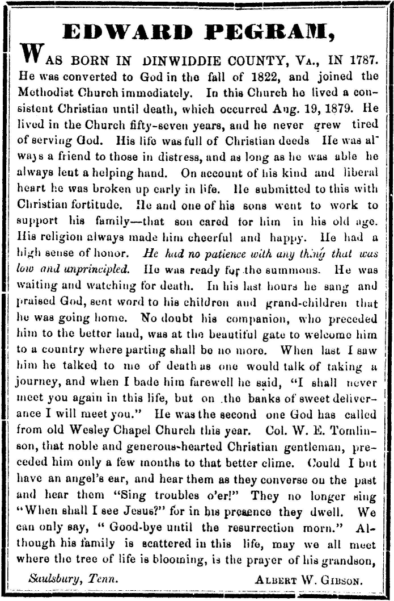

|
|
|||||||||
|
|
20 EDWARD PEGRAM5
Edward was born in Dinwiddie County, Virginia on 14 February 1787. His childhood, until about age 12 was spent in Dinwiddie County among a host of affluent relatives on large plantations, with slave labor and servants, a contrast to what he would later experience in Tennessee and Mississippi. Edward's father moved to Bedford County, Virginia about the turn of the century, and Edward grew up there. Bedford was well over 100 miles west of Dinwiddie in the foothills of the Blueridge. The move over wagon trails must have been difficult, but not so formidable as what the family would undertake later, in their move to North Carolina. Daniel, Edward's father, was according to the census, still in Bedford in 1810. The General Index to Heirs, Devisees or Fiduciaries in Bedford County, shows an action in settlement of account with Presley Nelms in 1813. Daniel probably moved to North Carolina in that or the following year. Before that time Edward had married Dorothy Gilliam. Dorothy Vaughan married Thomas Hunt in Sussex County, Virginia. They had a daughter, Martha Hunt, who married Samuel Gilliam, and their daughter, Dorothy Gilliam, married Edward Pegram, in Sussex County on 2 1 December 1807. The Gilliarn family was of Norman descent, and the original name was Gillaume (Williams). They were descendants of French Hugenots, who fled France because of persecution, particularly after the fall of the Hugenot fortress of Rochelle in 1628. Some of these reached America in the middle and latter part of the seventeenth century, and among them was John Gilliam, who settled in the lower Appomattox. One source has his descendants arriving in Dinwiddie County after 1690, when the County was opened for settlement (40). Another source (107) states that the ancestor of the family in Virginia, about 1682, was William Gilliam, who married a Polythress. Their issue were Robert, who married Lucy Skelton, Heiress of "Elk Island", Hanover County; William Jr. who married Christine Eppes; John who married the daughter of the Reverend Patrick Henry; Jane who married Charles Duncan and Ann who married Nathaniel Harbeson. The Dinwiddie branch of the Gilliam family could have descended from either John or William. They both arrived in Virginia about the same time, and were likely of the same general family. The Gilliams were a successful family, and carved out an influential place in the development of the area. "Burnt Quarters", which has been occupied continuously by the Gilliams, since at least 1838, is according to Jones (40), perhaps Dinwiddie's most historical home. The earliest known owners of the house were Lititia and Robert Coleman. The original house was two stories with a hall and dining room. An additional two story and a half wing was added before 1800. The interior is a combination of Federal and Greek Revival trim, with a Georgian mantel. Many antiques of the family are still in the house, including portraits slashed by Federal soldiers during the Civil War. The house was a focal point of the battle of Five Forks, where according to some, the fate of the Confederacy was written. Yankee soldiers occupied the house. The Confederate Army rescued Mrs. Gilliam's daughter beforehand, but Mrs. Gilliam refused to leave (40). Acting Brigadier General William Johnson Pegram, youngest son of General James West Pegram, was killed during the battle, as previously noted. "Wales" was another well known home in Dinwiddie, which was originally owned by Peter Jones Jr., who died in 1734. "Wales" was later owned and occupied by Edwin Gilliam. 112
The 1810 census shows Edward Pegram in Bedford County, Virginia. He remained in Virginia at least until 1825, since three different censuses list his daughter, Ann Hardaway Pegram, as having been born in Virginia. The ages given, places her birth in 1825. Apparently Edward did not remain in Bedford County after his father, Daniel, moved to North Carolina, about 1 8 13. He evidently went to Sussex County, since he was drafted into the army at the mustering grounds in Sussex County on 1 July 18 13. He was listed in the 1820 Sussex County Census, and evidently lived there until 1825 or later. Sussex County was the home of his wife Dorothy Gilliam (at least that is where he married her). When Edward Pegram decided to migrate South, he apparently did not go to North Carolina, as did his father. There has been no record found of his having lived there. Edward and "Dolly's" youngest child, Edward, was born in Alabama in 1829, according to census records. The 1830 census shows that Edward and his family were living in Hardeman County, Tennessee. It is likely that his last child was born while the family was on its way from Virginia to Tennessee. They probably followed a southwestern route from Sussex County, staying east of the mountains, and then turned west across northern Alabama, finally reaching Hardeman County, Tennessee, which borders Mississippi on the south. It may be that Edward sojourned for a time in Alabama. We have no record of his whereabouts after 1825 in Sussex County, Virginia, and the birth of his son Edward in Alabama in 1829. Both Edward5 and his wife Dorothy had relatives in Alabama. The Vaughans, relatives of Dorothy's were there, and, some of Edward's relatives had moved there by 1824. Edward Pegrams, son of Baker Pegram4, a son of Edward3 and Mary Scott Baker, married Rebecca Harper. He died in 1824 and Rebecca moved to Limestone County, Alabama, with her six children. Her daughter Martha6 married there in 1827. Rebecca was the wife of Edward's first cousin, and there were also other members of the family in the area. Edward arrived in Hardeman County, Tennessee, about 135 miles west, northwest of Limestone County, Alabama in 1829 or 1830. Why did Edward and Dorothy go to Hardeman County, Tennessee? Yes, there were reasons. In addition to seeking new land that was not exhausted of its fertility by the successive growing of tobacco over a long period, Edward and Dorothy were following relatives who had preceded them. The following transactions establish this fact. Thomas Jones Vaughan, son of Fielding Vaughan, Sr. of Virginia, and a first cousin of Dorothy Pegram's mother, Martha Hunt Gilliam, purchased 240 acres of land in Hardeman County. This was purchased from Thomas Hunt, a brother of Dorothy Pegram's mother, and Dorothy's uncle. Thomas B. Gilliam, Dorothy's brother, signed as witness. 1 he date was 5 April 1827, at least two years prior to the arrival of Edward and Dorothy in Hardeman County, Tennessee (145). The date was the earliest found of any of the individuals named. However, John Hunt, brother of Thomas, purchased 1000 acres of land a year earlier, 6 February 1826. Wilkins Hunt, likely another brother or a cousin, purchased 1000 acres of land on 2 1 November 1825. These are the earliest dates that any known relatives of the Pegram or Gilliam families were noted as residents of Hardeman County, Tennessee. Andrew Hunt purchased land in 1826 in adjoining Fayette County, and on 11 April 1828 Charles W. Hunt bought 640 acres in Hardeman County from P.M. Hobbs, and Wilkins J. Hunt signed as witness. The Hunts cleared their land, mostly along the Wolf River, built a manor house and became prominent citizens of the surrounding area (19). On 28 December 1841 there was a sale of the estate of Wilkins J. Hunt, who probably died shortly before that date. It was a large estate involving numerous slaves and much land. Some of the buyers were Charles W. Hunt, John Hunt and Robert Hunt, further indicating the close kinship between the Hunts in that area. Most of the land bought by the Hunts, Gilliams and Pegrams was on the water of the Wolf River, sometimes in Fayette County, but mostly in Hardeman, near the Mississippi border. It was usually in the eleventh Surveyor's District, but sometimes in the tenth. Edward Pegram bought land in the 11th. 113 District, Range 2 Sec. 2. Thomas Hunt sold land to Thomas B. Gilliam in the 10th. District, Range 5. Sec. 2. Thomas Hunt dealt extensively in land, at least in Hardeman and Fayette Counties in Tennessee and in Tippah County in Mississippi. The deeds often gave his place of residence as Granville County, North Carolina, where he moved from Virginia, before going to Tennessee. The 1830 census of Hardeman County does not list him, but he is shown in the 1840 census. Hunt (Thomas) and Govan dealt in land in Tippah County, Mississippi. Thomas Hunt, while still living in North Carolina was dealing in land in Tennessee as early as 1823. In Fayette County it is recorded that in Carroll County Court House, State of Tennessee, Thomas Hunt of Granville, North Carolina, gave Mennacan H. Howard of Carroll County power of attorney, and appointed "him as his agent and attorney in fact, to transmit business in Tennessee, to convey lands in Hunt's name, to buy and sell lands and contract debts, to bring suit and all other things which he may lawfully do or cause to be done in my name". This was signed 8 September 1823 by Thomas Hunt. This is the earliest record found of any of the Hunt family being in Tennessee, although not a resident at the time. Thomas Hunt's business dealings in Tennessee were probably the precursor for the later move of his brothers and other relatives to the Hardeman County area. It is said that the Hunts, at one time, owned much of the Ames Plantation near Grand Junction, where the bird dog field trials have been held for many years (19). The 1830 census shows the following Hunts in the area: Charles W., George W., James S., John and William, in Hardeman County; Able C. and Christopher in Fayette County; and J. Hunt in Shelby County. From the foregoing it appears evident that the Hunts were the first Pegram related family to go to Hardeman County. The Vaughans and Thomas B. Gilliam arrived at almost the same time, and Edward Pegram arrived several years later. Edward Pegram was not the first of the Virginia Pegrams to go to Tennessee. A branch of the family settled in Davidson County, just west of Nashville, in what is now Cheatham County, which was formed in 1856. The focal point of their settlement took the name of Pegram. and the town of Pegram, Tennessee still thrives today, consisting of some 1000 people. Marriage records from Davidson County for the period 2 January 1789 to 13 December 1837 (Book 1), show that George Pegram6 was married to Sallie Burnett on 3 October 1826. Sallie Pegram's marriage was recorded in 1828, and several other Pegram marriages were recorded in 1829, 183 1, 1834 etc. At least 12 marriages of the Pegram family were noted during the 1820s and 1830s. It is possible that the Pegrams of Davidson County might have had some influence on Edward's move to Tennessee, although he never personally lived in that area. It will be recalled that Edward Pegram4, son of Edward Pegram and Mary Scott Baker, married Ann Harper Parham, a widow, after his first wife, Mary Lyle, had died. It is interesting that "Hardeman County Historical Sketches", by the Hardeman Historical Commission, page 244, lists Benjamin M. Parham Jr. (9 May 1827 to 4 June 1886), the son of Benjamin M. Parham and Mary Jane Butts. He married Susan Hardaway Mason, born 1 October 1836, died 19 May 1922, daughter of Ann Stith Hardaway Mason. The Hardaways, the Masons and the Pegrams intermarried in Virginia, and some of the Hardaway family went to North Mississippi, after the Pegrams had arrived. As noted previously Thomas Hardaway, Sr. married Jane Stith in Virginia, and Major Baker Pegram, son of Edward3 and Mary Scott Baker, had a son Benjamin who married Katherine Stith. Further study would probably reveal that Benjamin Parham, of Hardeman County, Tennessee, was from the Dinwiddie, Virginia area, and related to the Pegrams by marriage. Daniel and Robert Hunt were the sons of the Hunt brothers in Hardeman County. Both went to Tippah County, Mississippi. Daniel married Sarah Thurmond in Hardeman County, Tennessee, 26 March 1833. He bought land in Tippah County in 1836, and was Tippah County Court Clerk in 1850. Daniel's hand written will was dated 30 July 1879, wherein he gave all of his estate to his wife Sarah, and named Thomas A. Hunt, his son, as Administrator, document 536; Tippah County, Mississippi. The 1850 Tippah County census shows the following Hunts: Aynom Hunt and wife Martha; Daniel Hunt and wife Sarah, with five children; Edward Hunt; Hapley Hunt and wife Grace, and seven 114 children; Robert Hunt and wife Lucinda and three children. There was a John Hunt and a J.A. Hunt, his son. John was born in Virginia but moved to Tippah County from South Carolina, and was not apparently of the Hardeman County Hunt family. There are several entries in deed book D of Tippah County that relate to Robert Hunt. On page 453, 18 March 1842, there is the following: Rec'd of Robert Hunt $300.00 in full for Sampson age 12. S/ Benjamin Gunnels. Wit: C. Harris, Jas. H. Hobbs, E. Pegram JP. Recorded 15 April 1842. HB. The E. Pegram, who was Justice of the Peace, was Edward Pegram5. Edward Pegram did not move from Hardeman County, Tennessee to Tippah County, Mississippi until 1838 or 39, therefore the Hunts, at least Daniel, preceded him. Some of the Hardaway relatives of Edward Pegram's mother, Nancy Hardaway, moved to Tippah County, but arrived later than the Pegram5. Dr. John Peterson Hardaway, son of Henry Simmons Hardaway and Susan Lundy (Lundie), was born in Brunswick County, Virginia, 12 September 1805, and died in Mississippi 17 April 1861. He was apparently the first of the family to arrive in Tippah County. This was about 1838 (19), and about the time that Edward Pegram moved from Hardeman County, Tennessee, to Tippah County, Mississippi. At the same time, or about the same time, that Dr. Hardaway arrived, his sister, a Mrs. Batte and her husband John Pedway Batte, and a cousin, Thomas Peterson Hardaway, arrived. He married Susan Lundy Hardaway, a cousin, and a sister of Dr. Hardaway's, and they went to Vicksburg, Mississippi. Dr. Hardaway had five children, among them Susan E., who married Armistead Thompson Mason, from Dinwiddie County, Virginia, and who lived in Benton County, Mississippi. John Walter Hardaway and Hubbard Wyatt Hardaway were the sons of Dr. John Peterson Hardaway (108). Dr. John Peterson Hardaway was the great-nephew of Nancy Hardaway, the mother of Edward Pegram. It will be recalled that Nancy and Daniel Pegram moved from Virginia to the Mecklenburg- Lincoln County area of North Carolina about 17 years before their son Edward arrived in Hardeman County, Tennessee. George W. Vaughan 35, farmer, and his wife Mary, 33, and one infant are shown in the 1850 Tippah County, Mississippi census. Since George W. married Mary Pettipool in Madison County, Alabama on 6 January 1847, this was the likely locale of the earlier Alabama Vaughans. Madison County is adjacent to Limestone County, where some of the Pegrams settled as early as 1824. George W. was from Virginia and no doubt had some kinship with Dorothy Pegram's mother, Martha Hunt Gilliam. It appears that some members of all of the Pegram related families that were in Hardeman County, Tennessee, eventually went to Tippah County, Mississippi. The 1830 census of Hardeman County, Tennessee, shows Edward Pegram, four males and three females. According to their age brackets, these would be Dorothy, his wife, and the following children: SAMUEL GILLIAM6, MARTHA T., REUBEN, WILLIAM G.. ANN HARDAWAY and EDWARD. No children were born after Edward and Dorothy arrived in Tennessee. Edward had a considerable number of slaves, and began farming in Hardeman County, Tennessee. There are records of land purchases in 1833, but not for large acreages. He purchased 112 1/2 acres from William Whitaker, on the Wolf River, in the 11 th. Surveyors District, Range 2, Section 2. He purchased 50 acres, on the Wolf River from Mathew Farrow for $286. Edward made some other small purchases of land. The location of his purchases being on the Wolf River, was no doubt near to his relatives the Hunts. It is probable that Edward farmed some of the Hunt's land, since his purchases did not appear to be sufficient to utilize his slave labor. Land might have been purchased that was not noted in the records by the compiler. Edward was not very successful in his farming enterprise in Hardeman County. Actually, they were a financial failure. On 23 April 1838 he gave a deed of trust to cover indebtedness to George H. Wyatt, in the sum of $13,000. This was a substantial sum of money in those days, and it was secured by twenty negro slaves, named in the trust deed; also ten head of horses, twenty head of cattle, two yoke of oxens, one wagon, one cart, and furniture. The money was to be paid before 1 January 1845. He gave another Trust Deed in 1839 covering additonal livestock, etc. No record of the disposition of these trust deeds was seen in Hardeman County, although they are undoubtedly recorded someplace. 115 Edward sold his land and home in Hardeman County in 1838, and moved to Tippah County, Mississippi, probably during that year. He was shown in the Tippah County census for 1840. Edward settled near Falkner, a short distance from the Tennessee line, and about 25 miles east of Michigan City, where the Hardaways settled, at about the same time. Records in Tippah County in 1840 revealed that Edward still had his slaves, and that he had paid some toward his indebtedness. He was indebted at the time to the Memphis Bank of Tennessee, and others. A document of October 1840 showed that Thomas B. Gilliam, his brother-in-law, stood surety for some of his indebtedness (109). Edward's slaves must have been cleared because he used them again in a deed of trust, dated 3 February 1840, and again Thomas B. Gilliam stood surety. The records were not followed to determine the final outcome of Edward's financial problems, but from other information, he apparently lost most of his assets. The Tippah County slave schedules for 1850 and 1860 do not show him with any, although his three sons, Samuel Gilliam, Reuben and William G., are shown as slave owners. Thomas B. Gilliam, brother of Edward's wife, was in Tippah County in 1840, having moved from Hardeman County, Tennessee. He purchased land in Tippah County in 1843. On 9 December he gave a negro girl, named Lucy, to his niece, Ann Hardaway Pegram, for natural love and affection (1 10). On the same day he gave to his sister Dolly Pegram, for love and affection, a long list of household furnishings that had been previously listed in a deed of trust by Edward Pegram, wherein Thomas had stood surety. It is thus evident that Edward's assets had gradually slipped away. Edward was in the war of 18 12 for a three month period from 1 July 1 8 1 3 to 28 September 18 1 3. He was a First Corporal in the Company of Capt. Issac Bendall of the Virginia Militia, under the Command of Col. Beaty. He was drafted in Sussex County and was discharged at Norfolk, Virginia. In Tippah County, on 1 March 185 1, Edward applied for a warrant for bounty lands to which he was entitled under the act of 28 September 1850, granting bounty land to certain officers and soldiers who had been engaged in the military services of the United States. The application was sworn to and subscribed before Samuel H. King, Justice of the Peace, Tippah County, Mississippi (111). On 3 April 1855 Edward made another application for additional bounty land to which he might be entitled, under the Act of 3 March 1855. He stated that he had previously received a warrant for bounty land of 40 acres, under the Act of 28 September 1850. The application was made in Tippah County, and Edward's signature was attested by Simon R. Spight and A.D. Berry. On 12 June 187 1 Edward made application for a pension for his services in the War of 18 12, under the act approved 10 February 187 1. The application was made in Benton County, Mississippi, which was formed from Tippah County in 1870. He gave his age as 84 and his post office address as Saulsbury, Tennessee. He had been living in the Falkner area of Tippah County, and was in the 1870 census there. After the death of his wife he apparently went to Saulsbury, at least temporarily, where a number of the family lived. Dorothy, Edward's wife, was shown in the Tippah County census of 1860, but not in 1870. She had evidently died in the interval. Edward died 29 August 1879 at age 91. He died in Tippah County, Mississippi, and was buried near Falkner, probably in old Mt. Zion Cemetery. Thus ended a life of almost a century, that began in affluence in Dinwiddie County, Virginia, at almost the same time as the birth of the nation. His life spanned the Indian Wars, the War of 1812, and the devasting Civil War, which marked the end of the great plantations, the elegant homes, the slaves and much of the aristocracy of the South, to which Edward originally belonged. Edward's affluence did not endure even to the beginning of the Civil War. He did not leave the material assets with which he began, but he and Dorothy Gilliarn did leave the richest endowment of all, a sturdy stock of descendants that carries on the family name and traditions to the present day. 116 Obituary of Edward Pegram5
 117 |
| Back | Next | Index | Table of Contents | References | |